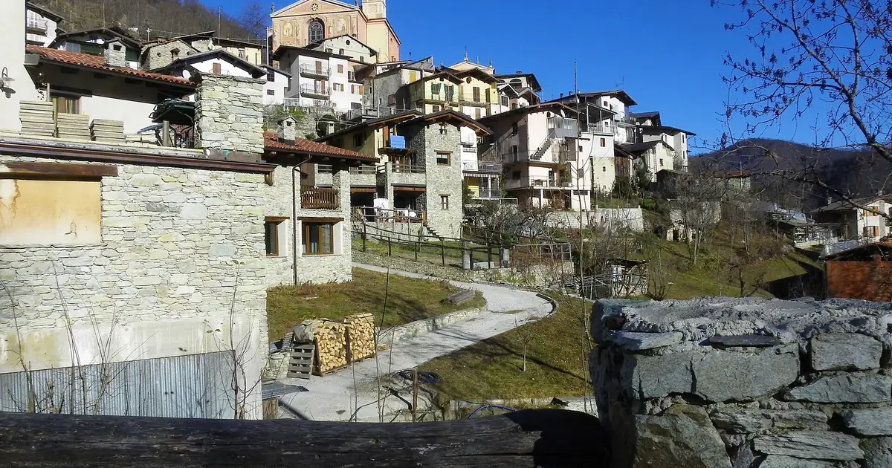

Zugspitze a dicembre: la giornata sul ghiacciaio tedesco contro Garmisch-Classic
Due comprensori condividono una sola città. Nei nostri 46 inverni di storico l'altopiano glaciale della Zugspitze ha 122 cm in un tipico 15 dicembre a 2627 m, mentre la vetta del Garmisch-Classic a 2047 m ne ha 57. I giornalieri costano quasi uguale: 70,50 EUR e 69 EUR online.
Le previsioni neve in tempo reale per Zugspitze nell'app SnowScopeAltezza neve, allerte powder e mappa 3D, gratis.Due comprensori, un dicembre
Garmisch-Partenkirchen offre una scelta rara. In alto la Zugspitze, l'unico comprensorio su ghiacciaio della Germania, raggiungibile in funivia o con il treno a cremagliera; l'area mappata parte dalla stazione a valle di 995 m e le piste stanno sull'altopiano sotto la vetta di 2627 m. Più in basso il Garmisch-Classic: 38 km di piste mappate tra 727 m e 2047 m.
A dicembre la domanda è semplice: spendere più o meno la stessa cifra per neve sicura in alto, o per più piste su un manto più sottile?


La neve nelle stesse date
In cima alla Zugspitze tutti i nostri inverni avevano almeno 30 cm nella settimana dal 15 al 21 dicembre, e il 96 % aveva 60 cm o più a Natale. Anche un anno magro (1 inverno su 10) ha lassù 62 cm il 15 dicembre. L'inverno scorso: 80 cm.
Il Garmisch-Classic è più altalenante. La sua vetta aveva 30 cm quella settimana nell'89 % degli inverni, la parte media (1387 m) solo nel 48 %, e il fondo (727 m) quasi mai: un tipico 15 dicembre lì ha 6 cm. La stazione a valle della Zugspitze non va meglio, con 12 cm; a dicembre nessuno ci scende sugli sci.
Il prezzo alla cassa
Secondo il listino ufficiale 2026-27 il giornaliero adulti costa 70,50 EUR online per la Zugspitze, salita compresa, e 69 EUR online per il Garmisch-Classic. La pagina ufficiale precisa che alla cassa si paga di più che online. Nessuno dei due comprensori vende uno skipass di 6 giorni in quel listino.
A dicembre il valore qui sta nel giorno, non nella settimana: comprate online, scegliete l'area in base alla neve e tenete aperte entrambe le opzioni.
La scelta per ogni sciatore
Principianti e famiglie: l'altopiano della Zugspitze, con piste dolci e la migliore neve di dicembre in Germania, con il bel tempo. Sciatori esperti: gli impianti alti del Garmisch-Classic appena la parte media è coperta, di solito da fine dicembre. Per tutti: nei giorni di bufera l'altopiano può chiudere o essere gelido, quindi seguite la previsione e tenete l'area bassa come piano B.
Consigli per sciatori
- Comprate il giornaliero online: secondo il listino ufficiale costa meno che alla cassa.
- A dicembre sciate sull'altopiano della Zugspitze e scendete in funivia o in treno; la valle è raramente bianca.
- Garmisch-Classic prima di Natale: restate sugli impianti alti; la parte media aveva 30 cm a metà dicembre solo in circa metà dei nostri inverni.
- Il fuoripista sulla Zugspitze è terreno glaciale: prima leggete il bollettino valanghe della Baviera.
Altre mappe (siti esterni)
Riferimenti e crediti
- Zugspitze: official lift-pass prices (2026-27), checked 13 November 2026 zugspitze.de/prices
- Garmisch-Classic: official lift-pass prices (2026-27), checked 13 November 2026 zugspitze.de/prices
Su questi numeri
Numeri della neve: storico neve SnowScope, 46 inverni passati (1980-81 - 2025-26) alle quote della località, corretto per la quota (una stima per un'area, non i bollettini della località); "buona neve" = 30 cm o più al suolo in media nella settimana. Mappa: la nostra altezza abituale al 15 dicembre distribuita sul terreno secondo la quota. Piste e impianti: mappatura OpenSkiMap. Skipass: listini ufficiali delle località, verificati il 13 novembre 2026; i prezzi possono cambiare.
Bollettini valanghe ufficiali: Lawinenwarndienst Bayern
Cita questo articolo
Per ricerca, didattica o stampa: numeri e grafici sono liberamente riutilizzabili con licenza CC BY 4.0 citando così.
SnowScope (2026), Zugspitze a dicembre: la giornata sul ghiacciaio tedesco contro Garmisch-Classic, https://snowscope.app/blog/it/2026/11/zugspitze-december-skiing-germany-glacier-price.html, consultato il 2026-11-14
SnowScope (Atlas Labs). (2026, November 14). Zugspitze a dicembre: la giornata sul ghiacciaio tedesco contro Garmisch-Classic. SnowScope snow reports. https://snowscope.app/blog/it/2026/11/zugspitze-december-skiing-germany-glacier-price.html
BibTeX
@misc{snowscope2026zugspitzedecemberskiingg,
author = {{SnowScope (Atlas Labs)}},
title = {Zugspitze a dicembre: la giornata sul ghiacciaio tedesco contro Garmisch-Classic},
year = {2026},
month = nov,
howpublished = {\url{https://snowscope.app/blog/it/2026/11/zugspitze-december-skiing-germany-glacier-price.html}},
note = {Published 2026-11-14 13:29 UTC; accessed 2026-11-14}
}· CC BY 4.0 · Metodi, dati e strumenti →
Zugspitze: neve e temperatura per quota, quest'inverno vs lo scorso (strumenti) →
Segui Zugspitze
Gratis: un messaggio quando arriva la neve e il meteo ogni mattina.
Altri bollettini neve

Artesina ha ricevuto 44 cm di neve fresca nelle ultime 72 ore. Ora ha circa 20 cm sui pendii superiori, secondo il nostro modello neve.

Les Deux Alpes: 38–42 cm di neve fresca in 72 ore (Alpi, 14 novembre). La Grave ha ricevuto 53 cm di neve fresca nelle ultime 72 ore, di cui 7 cm …

Nevicate a Val Thorens, 13 novembre 2026: 27 cm caduti in vetta (3175 m) e 17 cm a 2498 m in sette giorni; l'altezza della neve è 50 cm e 8 cm. Prossimi sette giorni: 86 cm in vetta, 73 cm a 2498 m, limite delle nevicate ben sotto il paese. La stagione abituale da 46 inverni.